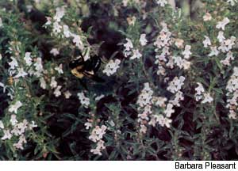
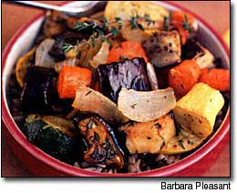

Pretty, palate pleasing thyme will draw you into the garden with its peppery fragrance and tidy appearance, and up to the table with its spicy flavor. With so many different kinds of thyme to choose from, you're sure to find more than one that will be particular favorites.
Thyme pleases people in so many ways it should be no surprise that more than 300 types have come into cultivation. The rhymes preferred by cooks, broadly categorized as English or French thymes (Thymus Vulgaris),impart a woodsy, aromatic flavor to savory dishes based on vegetables, grains, seafoods and meats. A few fruits make tasty thyme combinations, too, including figs and pears. The English thymes have broader leaves than the French; both are well-mannered garden plants that grow as subshrubs.
The citrus rhymes ( T x citriodorus, T. pulegiodes and assorted hybrids ) often are labeled "lemon" thyme in garden centers, and many feature variegated leaves. They develop variable flavor potencies, and as a consequence sometimes may be more useful as ornamentals than as culinary plants.
A third group, generically called creeping rhymes, includes T. serpyllum, T. praecox and T herbabarona. Typically, these are grown as blooming ground covers, planted between stepping stones or in walkway crevices, where their spicy s cents are released underfoot, and the flower nectar attracts bees and other beneficial insects. In former times , T. serpyllum, also called mother of thyme, often was planted atop graves. As culinary plants, most creeping rhymes rank far below the English and French thymes, or the best-flavored citrus strains.
Historically regarded as the herb of courage, thyme was a leading medicinal herb for psychological problems" including shyness, nightmares and melancholy. It also is a source of antioxidants, and its essential oil contains high concentrations of thymol, once used as a topical antibiotic. Too much is toxic, however, and thyme oil applied to the skin often causes serious irritation - yet you are completely safe sipping a cup of thyme tea or using thyme liberally in cooking.
Mediterranean cooks make heavy use of thyme, which is native to that region, and innovative modern cooks everywhere employ it as well. Simple dishes such as roasted vegetables or risotto are transformed into savory specialties with the addition of the woodsy overtones of thyme, and any recipe that calls for cream sauce or cheese can be enhanced with a bit of the herb. You also can add thyme to dry rubs for meat, especially beef or pork, or to a stock pot; it is one of the three herbs in French bouquet garni, along with parsley and bay, and it holds up well to long cooking times.
Whenever fresh sprigs are available, they make a wonderful edible gar nish to any dish flavored with thyme during cooking. At the table, simply pull your thumb and index finger along the stem from end to end to release the tiny, tasty leaves.
GROWING YOUR OWN
All garden rhymes need gritty, well-drained soil, and plenty of fresh air and sunshine, just as their wild ancestors did in the Mediterranean basin. At the same time, they benefit from regular feedings with an organic fertilizer, which help keep the plants lush and healthy. Most strains are reliably hardy to Zone 5; a few can even withstand winters to Zone 4.
English and French thymes can be started from seeds (with patience), or nursery plants are widely available. The best strains of citrus thyme are vegetatively propagated, so it is best to purchase plants of these types. When shopping for thyme plants you will use for cooking, pinch off a piece of leaf to taste before you buy.
English and French thymes are upright growers; the citrus rhymes grow into dainty, fine-textured mounds that look pretty along the edges of flower beds. Bloom colors range from white to pink and purple, and although bloom time varies with climate, it generally arrives by midsummer. Bees and other beneficial insects will flock to the plantings when they're in flower.
With any type of thyme, you can expect to see new growth soon after setting out plants in the spring. If you want to gather lots of leaves to dry and use in cooking, make a major harvest in early summer, cutting plants back by half their size. The sheared plants will then produce a replacement crop, which you can harvest in late summer.
Dry the cut stems on screens in a warm, well-ventilated place, out of direct sunlight, or in a 150-degree oven. You will discover that the thyme stems, studded with little leaves, are easy to handle and that the leaves dry very quickly. When they feel crisp, strip them from the stems and store them whole in an airtight container, away from the light. Thyme leaves, properly dried and stored, retain their culinary quality for at least a year.
After three years in the garden, thyme plants often become woody and prone to disease, so replacements will be needed. The best way to propagate your favorites is to root stem cuttings taken from your own plants in spring. Or, you can root stems while they are still attached to the parent plants using a technique called layering.
Here's how to layer: Early in the summer, bend a stem over until it touches the soil. Remove the leaves from all but the tip of the stem. Bury a 1-inch middle section of stem 1 inch deep, and anchor it in place with a piece of wire (a paper clip works well) or small stone. In a month or two, new root will have formed, and you can cut the layered stem from the parent plant and move it to a new place. Citrus and creeping rhymes can be dug and divided, preferably in early spring, just as new growth begins, and both types can be layered, too.
North Carolina writer Barbara Pleasant is a Mother Earth News contributing editor. Her newest book is The Whole Herb, recently released by Square One Publishers.
Double Thyme Roasted Vegetables
Roasting brings out the sweet succulence of any vegetable. Serve thyme-roasted vegetables warm with brown rice or polenta as a main course, or by themselves as a side dish. Chill any left-overs and splash them with balsamic vinegar for a wonderful vegetable salad the next day.
1 tablespoon olive oil
1 sweet onion, cut lengthwise into eighths
6 cups assorted vegetables, cut into 1-inch cubes (carrots, eggplant, yellow squash and zucchini make a good mix)
2 cloves garlic, peeled and quartered
1/4 teaspoon salt teaspoon freshly ground black pepper
1 tablespoon fresh thyme (or 1 1/2 teaspoons dried thyme), divided
Preheat oven to 425 degrees. Pour olive oil into a large roasting pan. Add remaining ingredients except for half of the thyme. Toss well to coat. Roast, uncovered, for 40 minutes, turning vegetables with a spatula every 15 minutes. After 30 minutes of roasting, add the remaining thyme and return to the oven. Serves 3.
Herb growers often cultivate selected strains of thyme that have proven especially well-adapted to local growing conditions; select these first to test in your garden, If you don't know of a local source for herb plants, you can find common and exotic strains of thyme, as well as hundreds of other herbs, from mail-order companies. Among the many sources are:
Companion Plants 7247 N. Coolville Ridge Road Athens, OH 45701 (740) 5924643 www.companionplants.com
Misty Ridge Herb Farm PO. Box 126 7350 W 14 Road Mesick, MI 49668 (231) 885-2290 www.herbplantsonline.com
Nichols Garden Nursery 1190 Old Salem Road NE Albany, OR 97321 (800)422-3985 www.nicholsgardennursery.com
Richters 357 Highway 47 Goodwood, Ontario LOC 1 AO Canada (905) 640-6677 www.richters.com
The Herb Cottage 442 CR 233 Hallettsville, TX 77964 (979) 562-2153 www.theherbcottage.com
The Thyme Garden Herb Company 20546 Alsea Highway Alsea, OR 97324 (541)4878671 www.thymegarden.com
Well-Sweep Herb Farm 205 Mount Bethel Road Port Murray, NJ 07865 (908) 852-5390 www.wellsweep.com
Mother Earth News
|
 |
 |
|